溶液的組成與分類
投影片 02
溶液是兩種或以上純物質形成的均勻混合物，組成可變。
溶液由溶質和溶劑組成。水作溶劑時稱為水溶液，以 (aq) 表示。
氣態溶液如空氣，液態溶液如食鹽水，固態溶液如合金。
電解質溶液有可移動的離子，例如食鹽水、鹽酸。糖水與酒精水溶液屬於非電解質溶液。
共 158 張投影片
溶液是兩種或以上純物質形成的均勻混合物，組成可變。
溶液由溶質和溶劑組成。水作溶劑時稱為水溶液，以 (aq) 表示。
氣態溶液如空氣，液態溶液如食鹽水，固態溶液如合金。
電解質溶液有可移動的離子，例如食鹽水、鹽酸。糖水與酒精水溶液屬於非電解質溶液。
| 比較項目 | 真溶液 | 膠體溶液 |
|---|---|---|
| 粒子直徑 | 小於約 1 nm | 約 1–1000 nm |
| 組成 | 溶質、溶劑 | 分散質、分散媒 |
| 光束通過 | 通常看不到光路 | 可見散射光路 |
| 例子 | 食鹽水、蔗糖水 | 牛奶、豆漿、墨水 |
膠體粒子可呈布朗運動，帶同種電荷時會互相排斥。
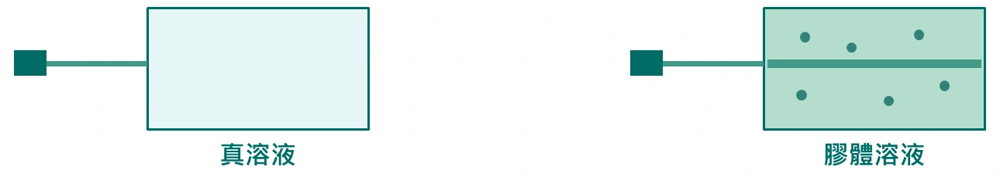
| 分類依據 | 類別 | 判別方式或例子 |
|---|---|---|
| 常溫下的外觀 | 氣態、液態、固態 | 空氣、食鹽水、合金 |
| 溶劑是否為水 | 水溶液、非水溶液 | 食鹽水、碘的酒精溶液 |
| 分散粒子大小 | 真溶液、膠體 | 均一透明的鹽水與可散射光的豆漿 |
| 溶液是否導電 | 電解質、非電解質 | 食鹽水中有可移動離子，蔗糖水中主要是分子 |
外觀、粒子大小和導電性是不同的分類依據。同一種水溶液可以同時屬於多個類別。
下列哪些並非溶液？
講義第 136 頁
下列哪些具有導電性？
講義第 136 頁
下列哪些溶液具有廷得耳效應？
講義第 136 頁
膠體溶液中之分散質，其粒子直徑約在下列哪一個範圍？
講義第 136 頁
下列敘述，何者不是溶液的特性？
講義第 137 頁
下列敘述何者不正確？
講義第 137 頁
下列溶液中，哪些為電解質溶液？
講義第 137 頁
下列哪些為膠體溶液？
講義第 137 頁
下列有關豆漿之敘述，哪些正確？
講義第 137 頁
下列關於溶液性質的敘述，哪些正確？
講義第 137 頁
稀水溶液密度約為 1.00 g/mL 時，1 ppm 約等於 1 mg/L。
換算時先選一個方便的溶液基準量，再用密度和莫耳質量換算。
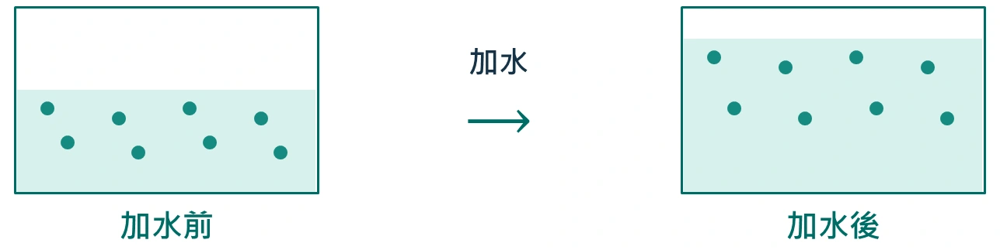
加入溶劑後，溶質的總莫耳數相同，但每單位體積內的溶質較少。
| 已知濃度 | 先假設的溶液量 | 直接讀出的溶質量 |
|---|---|---|
| 重量百分濃度 P% | 100 g 溶液 | P g |
| 體積莫耳濃度 a M | 1 L 溶液 | a mol |
| 百萬分點濃度 b ppm | 1 kg 溶液 | b mg |
以密度換算溶液質量與體積，以莫耳質量換算溶質質量與莫耳數。
40 ℃ 時，100 g 水可溶解 60.0 g 硝酸鉀。所得溶液的密度為 1.11 g/mL，硝酸鉀式量為 101。求重量百分濃度與體積莫耳濃度。
講義第 139 頁
16 g 硫酸銅粉末溶於 100 g 水，配成密度 1.16 g/cm³ 的溶液。求重量百分濃度與體積莫耳濃度。（Cu＝64、S＝32、O＝16）
講義第 140 頁
食用米中的鎘限量為 0.5 ppm。每公噸食用米的鎘含量不得超過多少克？（Cd＝112）
講義第 140 頁
若以新鮮菠菜為唯一鐵質來源，假設其中鐵質可完全被吸收。已知菠菜含鐵 30 ppm，每天至少需吃多少克菠菜才能攝取 15 mg 鐵？
講義第 140 頁
比重 1.80、重量百分濃度 98% 的濃硫酸，其體積莫耳濃度為多少？
講義第 141 頁
自來水廠送出的水含氯濃度為 0.71 ppm。求重量百分濃度與體積莫耳濃度。（Cl＝35.5）
講義第 141 頁
將 12 M 的鹽酸 200 mL 加水配製成 4 L，溶液的濃度變成多少 M？（Cl＝35.5）
講義第 143 頁
將 150 g、30% 的鹽酸加水稀釋至 200 mL，密度變成 1.1 g/cm³。稀釋後溶液的體積莫耳濃度為多少？
講義第 143 頁
將 150 mL、21.0%、比重 1.16 的鹽酸與 350 mL、6.00 M 的鹽酸混合。假設體積具有加成性，求混合後的濃度。
講義第 143 頁
濃硫酸的比重為 1.84，重量百分濃度為 98%。欲配製比重 1.5、6.0 M 的硫酸溶液 1.0 L，應採哪種方法？（S＝32）
講義第 144 頁
要配製 100 mL、0.100 M 的標準溶液，最好使用哪種 100 mL 容器？
講義第 144 頁
某化學工廠的廢水中，汞離子的重量百分率為 0.0003%。廢水中汞離子的含量應為多少 ppm？
講義第 144 頁
3 M 硫酸的比重為 1.18，其重量百分濃度約為多少？（H＝1、O＝16、S＝32）
講義第 144 頁
濃鹽酸比重為 1.20，含 36.5%（重量）的氯化氫。其體積莫耳濃度約為多少？（HCl＝
36.5）
講義第 144 頁
加甲醇於 2.00 mol 的水中，形成的溶液中水和甲醇分子數相等。溶液密度為 0.912 g/cm³，求甲醇的體積莫耳濃度。（甲醇式量＝32）
講義第 144 頁
將 25.3 g 的碳酸鈉溶於水，配成 250 mL 溶液。鈉離子的體積莫耳濃度為何？（Na＝
23、O＝16、C＝12、H＝1）
講義第 145 頁
將 75 mL 的蒸餾水加入 50 mL 比重 1.20、濃度 30% 的鹽酸，其重量百分濃度約為多少？
講義第 145 頁
假酒含甲醇 5000 ppm。甲醇與乙醇的密度均為 0.78 g/mL，每 0.6 L 假酒含多少 mL 甲醇？
講義第 145 頁
某硫酸溶液的體積莫耳濃度為 M mol/L，重量百分濃度為 P%。則該溶液的密度為何？
講義第 145 頁
15 g 硫酸銅粉末溶於 200 g、10% 的硫酸銅溶液中。所得溶液的重量百分濃度為多少？
講義第 145 頁
將一瓶 2 M 溶液倒去半瓶，再用水加滿。混合均勻後倒去四分之三瓶，再以 3 M 溶液加滿。假設體積具有加成性，最後的濃度為多少？
講義第 145 頁
自來水廠提供 2 ppm 的臭氧飲用水。若以純水稀釋成原體積的兩倍，臭氧的體積莫耳濃度約為多少？（O＝16）
講義第 145 頁
混合 30% 和 20% 的氫氧化鈉溶液，以配製 24% 溶液。兩種原液的重量比（30%：20%）為何？
講義第 145 頁
某反應產生 0.100 mol 氯氣。以長 100 m、寬 50 m、深 2 m 的水池為基準，求氯氣的質量濃度（ppm）。
講義第 145 頁
甲為 0.01 M 硫酸（比重 1.02），乙為 0.11% 硫酸，丙為 1000 ppm 硫酸。哪些濃度比較正確？（硫酸式量＝98）
講義第 146 頁
自來水的氯氣濃度為 1 ppm，求其重量百分濃度及體積莫耳濃度。（Cl＝35.5）
講義第 146 頁
150 mL 的鹽酸密度為 1.16 g/cm³，濃度為 21.0%。求所含氯化氫的莫耳數及其體積莫耳濃度。（Cl＝35.5）
講義第 146 頁
固體的水中溶解度通常用固定溫度下每 100 g 水所能溶解的溶質最大質量表示。
未飽和溶液仍可溶解更多溶質。飽和溶液與固體共存時，溶解和結晶速率相等。
過飽和溶液含有超過平衡值的已溶溶質，加入晶種可促使多餘的溶質析出。
溶質和溶劑的性質、溫度會影響溶解度。攪拌通常加快達到平衡的速度。
多數固體在水中的溶解度隨溫度升高而增加，仍須依個別物質的曲線判讀。
氣體在水中的溶解度通常隨溫度升高而降低，隨該氣體分壓增加而提高。
汽水開瓶後二氧化碳分壓降低，因此溶解的二氧化碳逸出。
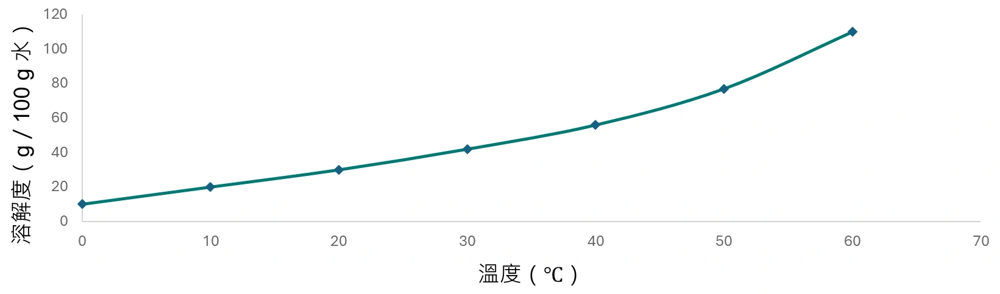
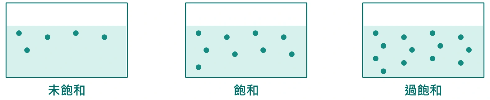
| 狀態 | 和同溫度溶解度比較 | 加入同種晶體後 |
|---|---|---|
| 未飽和 | 低於上限 | 還可以溶解 |
| 飽和 | 等於上限 | 與固體共存時，溶解與結晶速率相同 |
| 過飽和 | 超過上限 | 可能誘發結晶 |
教材示意以 25 ℃、100 mL 水為例，顯示溶解量隨氧氣分壓提高而增加。
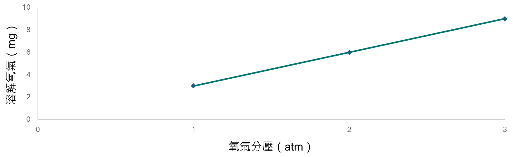
下列有關影響溶解度因素的敘述，哪些正確？
講義第 150 頁
將定量食鹽溶於水中，哪些操作可增加溶解速率，但不影響溶解度？
講義第 151 頁
利用硝酸鉀溶解度曲線作答。
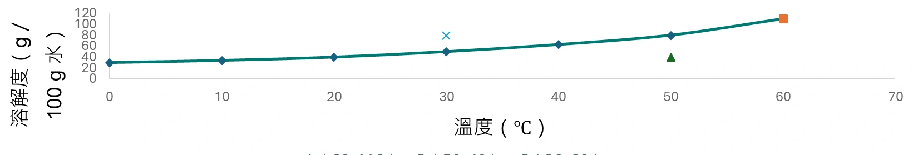
A（60, 110） B（50, 40） C（30, 80）
（1）A、B、C 三點中哪一點是過飽和溶液？（2）A 的重量百分濃度為何？
（3）30 ℃ 時，溶解 75 g 硝酸鉀至少需多少水？（4）50 ℃ 時，把 5 g 硝酸鉀加入 15 g 水中，是否達到飽和？
（5）為使 B 飽和，分別求需降至幾度、每 100 g 水需再加入多少硝酸鉀、每 100 g 水需移除多少水。
講義第 151 頁
硝酸鉀在 30 ℃ 和 80 ℃ 的溶解度分別為 40 和 80 g／100 g 水。
（1）100 g 的 80 ℃ 飽和溶液冷卻到 30 ℃，析出幾克？
（2）將 100 g 的 30 ℃ 飽和溶液加熱到 80 ℃，需加硝酸鉀幾克才達飽和？
講義第 152 頁
在 20 ℃ 將 200 g 食鹽放入 500 g 水中，充分攪拌後，底部仍有食鹽晶體。此溶液屬哪一類？
講義第 152 頁
下列何者與氣體在水中的溶解度較無關係？
講義第 152 頁
打開汽水瓶蓋後，先有少量氣體逸出，接著有許多氣泡冒出，汽水溫度略降。哪項事實可解釋此現象？
講義第 152 頁
要增加二氧化碳在水中的溶解度，何種方法有效？
講義第 152 頁
有關飽和溶液的敘述，何者錯誤？
講義第 152–153 頁
燒開水時，剛開始加熱就有氣泡生成。下列何者最能解釋此現象？
講義第 153 頁
恆溫下，將粉狀氯化鉀晶體加入密封的氯化鉀飽和溶液中。放置數天後，何者正確？
講義第 153 頁
將重量百分濃度為 20% 的某鹽溶液從 50 ℃ 逐漸冷卻。依下表判斷開始析出晶體的溫度區間。
| 溫度（℃） | 0 | 10 | 20 | 30 | 40 | 50 |
|---|---|---|---|---|---|---|
| 溶解度（g／100 g 水） | 11.1 | 15.5 | 19.6 | 24.2 | 37.5 | 59.2 |
講義第 153 頁
25 ℃ 時，氯化鈣飽和水溶液濃度為 7.5 M，比重為 1.4。每 100 g 水能溶解多少克氯化鈣？（Ca＝40、Cl＝35.5）
講義第 153 頁
閱讀硝酸鉀的溶解度曲線。在 10 ℃ 要溶解 30 g 硝酸鉀，至少需用多少水？
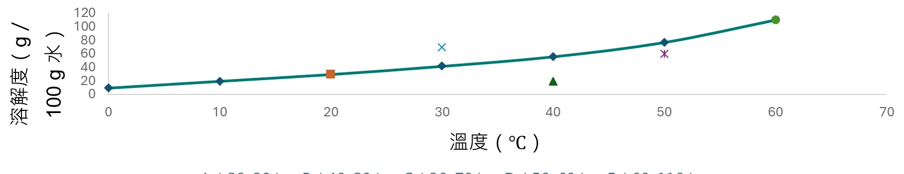
A（20, 30） B（40, 20） C（30, 70） D（50, 60） E（60, 110）
講義第 153 頁
依前一頁曲線，要使 B 點所示溶液迅速達到飽和，下列何種操作最適宜？
講義第 153 頁
依題組曲線，將溶液 E 的 110 g 樣品冷卻至 10 ℃，約析出多少固體？
講義第 154 頁
室溫下，將 100 g 的某鹽澄清溶液蒸發 5 g 水，或在原溶液加入 5 g 同種鹽，均可恰達飽和。其飽和溶液的重量百分濃度為多少？
講義第 154 頁
常溫常壓下，下列哪些氣體極易溶於水？
講義第 154 頁
將等重的硝酸鈉和硝酸鉀均勻混合，以某醇為溶劑量測溶解度。縱軸表示每 100 g 溶劑所溶解的溶質克數。哪些敘述正確？
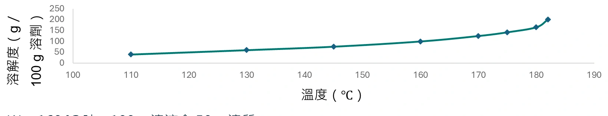
講義第 154 頁
將少許 30 ℃ 的硝酸鉀飽和溶液放在 84.0 g 錶玻璃上，總重為 86.2 g。水完全揮發後，總重為 84.7 g。求 30 ℃ 時硝酸鉀的溶解度。
講義第 154 頁
酸溶於水會增加氫離子濃度，鹼溶於水會增加氫氧根離子濃度。
強酸、強鹼在適用條件下近乎完全解離，弱酸、弱鹼只部分解離。
| 類別 | 常見例子 |
|---|---|
| 強酸 | 鹽酸、硝酸、硫酸 |
| 弱酸 | 醋酸、碳酸 |
| 強鹼 | 氫氧化鈉、氫氧化鉀、氫氧化鋇 |
| 弱鹼 | 氨水 |
酸性時氫離子較多，鹼性時氫氧根較多。中性在 25 ℃ 時的 pH 為 7。
| 指示劑 | 變色範圍（pH） | 由酸性端到鹼性端 |
|---|---|---|
| 甲基橙 | 3.1–4.4 | 紅 → 黃 |
| 甲基紅 | 4.4–6.2 | 紅 → 黃 |
| 石蕊 | 4.5–8.3 | 紅 → 藍 |
| 溴瑞香草酚藍 | 6.0–7.6 | 黃 → 藍 |
| 酚紅 | 6.8–8.3 | 黃 → 紅 |
| 酚酞 | 8.3–9.6 | 無色 → 紅 |
先換算酸提供的氫離子與鹼提供的氫氧根莫耳數，再按係數相減。
強酸或強鹼過量時，用剩餘莫耳數除以混合後溶液體積，再換算 pH。
| 比較中和前的莫耳數 | 過量粒子 | 強酸與強鹼混合後 |
|---|---|---|
| 氫離子較多 | 氫離子 | 酸性 |
| 當量相等 | 無過量的酸或鹼 | 25 ℃ 時約為中性 |
| 氫氧根較多 | 氫氧根 | 鹼性 |
由過量粒子莫耳數和總體積求濃度，再換算 pH。
下列哪一種實驗可以檢驗出水溶液是酸性的？
講義第 156 頁
下列化合物配成相同濃度的水溶液，哪一種的鹼性最強？
講義第 156 頁
25 ℃ 時，回答下列問題。
（1）某碳酸飲料的氫離子濃度如式（1），求氫氧根濃度。
（2）人體血液的氫離子濃度如式（2），求 pH。
講義第 159 頁
胃酸的 pH 約為 1.5，哪項敘述正確？
講義第 159 頁
在常溫、常壓下，下列關於水溶液 pH 的敘述何者正確？
講義第 160 頁
常溫常壓下，取 pH 5 的鹽酸 1 mL，加水稀釋至 1 L。稀釋後的 pH 應接近多少？
講義第 160 頁
依紫甘藍色素變色表，將紫甘藍汁加入與胃液 pH 相當的溶液中，呈何色？
| pH | 2 | 4 | 6 | 8 | 10 | 12 |
|---|---|---|---|---|---|---|
| 顏色 | 紅 | 粉紫 | 藍紫 | 綠青 | 草綠 | 黃 |
講義第 161 頁
紫甘藍色素遇到下列哪一種物質最可能顯出綠色？
講義第 161 頁
下列何者是酸鹼中和反應？
講義第 162 頁
0.50 L、0.20 M 的鹽酸可與多少克氫氧化鎂完全中和？
講義第 163 頁
將 70 mL、0.05 M 的鹽酸與 30 mL、0.10 M 的氫氧化鈉溶液混合，求混合液的氫離子濃度。
講義第 163 頁
在 25 ℃ 時，某溶液的氫離子濃度如下。下列敘述何者正確？
講義第 163 頁
柳橙中的檸檬酸與家用醋酸都是酸性水溶液，兩者的共同酸性與哪種粒子有關？
講義第 163 頁
有關酸鹼的敘述，何者錯誤？
講義第 164 頁
下列哪一個化合物的水溶液呈鹼性？
講義第 164 頁
25 ℃ 時，哪個量不會隨溶液酸鹼性的不同而改變？
講義第 164 頁
在 25 ℃，將鹼性溶液倒入盛有酸性溶液的燒杯中。燒杯內溶液的 pH 最可能如何變化？
講義第 164 頁
下列哪種酸溶液與等體積的 0.1 M 氫氧化鈉溶液混合後，所得溶液的 pH 最大？
講義第 164 頁
在 25 ℃ 時，甲溶液的 pH 為 6，乙、丙的濃度如下。三者的 pH 大小關係為何？
講義第 164 頁
一燒杯盛有下列形式濃度的鹽酸水溶液。何者正確？
講義第 164 頁
將 pH＝0.0 的鹽酸 1 mL 與 pH＝13.0 的氫氧化鈉溶液 9 mL 混合。混合液的 pH 為何？
講義第 164 頁
下列何者是酸鹼中和反應？
講義第 164 頁
題目以「咬人貓」釋出的甲酸與肥皂水為例。推測甲酸與肥皂水進行何類反應？
講義第 165 頁
20 mL、0.25 M 的硫酸，需要多少克氫氧化鈉才能完全中和？（氫氧化鈉式量＝40.0）
講義第 165 頁
發泡維他命 C 片置於水中，固體酸與固體金屬鹽反應產生大量氣泡。這種金屬鹽可能是哪一種？
講義第 165 頁
在五個地點收集雨水，以相同濃度的氫氧化鈉溶液中和。依附表判斷何處雨水酸化最嚴重。
| 地點 | 甲 | 乙 | 丙 | 丁 | 戊 |
|---|---|---|---|---|---|
| 雨水體積（mL） | 200 | 300 | 400 | 500 | 600 |
| 氫氧化鈉體積（mL） | 30 | 40 | 50 | 60 | 70 |
講義第 165 頁
題組：某胃病患者的胃液含 0.060 M 鹽酸，以氫氧化鋁中和。若分泌出 0.3 L 胃液，需要多少克氫氧化鋁？（H＝1.0、O＝16.0、Al＝27.0）
講義第 165 頁
除了氫氧化鋁，何種化合物也適合當胃藥成分？
講義第 165 頁
下列哪些常見液體的 pH 一定大於純水？
講義第 165 頁
有關酸鹼中和反應的敘述，哪些正確？
講義第 165 頁
若酸雨使土壤 pH 降到 6 以下，可以加入哪些物質以避免土壤過度酸化？
講義第 166 頁
在 25 ℃，某水溶液的氫離子濃度為氫氧根濃度的 400 倍。求此溶液的 pH。
講義第 166 頁
500 mL 鹽酸的氫離子濃度為 0.1 M。分別用（1）固體氫氧化鈣、（2）0.1 M 氫氧化鈣溶液、（3）氫氧根濃度為 0.1 M 的氫氧化鈣溶液完全中和。求各需用多少 g 或 mL。（Ca＝40）
講義第 166 頁
氧化是失去電子，氧化數升高。還原是得到電子，氧化數降低。
氧化劑得到電子並被還原。還原劑失去電子並被氧化。
氧化與還原同時發生。兩個半反應失去與得到的電子總數相等。
元素態的氧化數為 0。單原子離子的氧化數等於其電荷。
化合物各原子的氧化數總和為 0，多原子離子的總和等於離子電荷。
氧通常為 −2，過氧化物中的氧為 −1。氫通常為 +1，在金屬氫化物中為 −1。
| 常見氧化劑 | 常見還原劑 |
|---|---|
| 氧氣、氯氣、次氯酸鹽 | 碳、二氧化硫、維生素 C |
| 過氧化氫在特定條件下可作氧化劑 | 鋅等活性金屬可經氧化提供電子 |
在氧化還原反應中，還原劑有何特徵？
講義第 170 頁
關於下列反應，何者錯誤？
講義第 170 頁
關於下列反應，何者錯誤？
講義第 170 頁
下列哪個反應不屬於氧化還原反應？
講義第 170 頁
下列哪種反應不屬於氧化還原反應？
講義第 170 頁
氧化與還原兩個半反應發生時，下列哪一項在兩個半反應中必相同？
講義第 170 頁
暖暖包開封後，鐵粉主要和空氣中的哪一種物質反應而放熱？
講義第 170 頁
乳酸代謝氧化可生成二氧化碳和水。下式尚未配平，依氧化還原特性判斷 X 最可能為何？
講義第 170 頁
與二氧化碳有關的反應中，何者屬於氧化還原反應？
甲 強熱大理石，產生生石灰與二氧化碳。
乙 生石灰加水變成熟石灰並放熱。
丙 石灰水通入二氧化碳後出現白色混濁。
丁 繼續通入二氧化碳，白色混濁消失。
戊 白色混濁消失後，煮沸溶液又生白色沉澱。
己 燃燒的鎂帶置於二氧化碳中可繼續燃燒。
講義第 171 頁
依下列金屬失去電子的相對難易順序判斷何者正確。水的位置在錳與鋅之間。
講義第 171 頁
米粒大小的鈉放在濾紙上，置於倒置漏斗下方，接觸含酚酞的水溶液表面。依圖判斷哪些敘述正確。
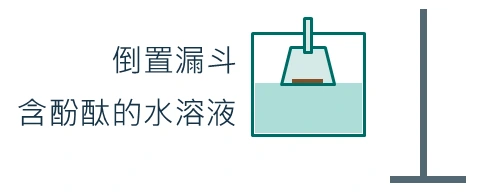
講義第 171 頁
將已知重量的銅片放入硝酸銀水溶液，隔夜後發現化學變化。哪些敘述錯誤？
講義第 171 頁
關於下列反應，哪些敘述正確？
講義第 171 頁
下列哪些淨離子方程式正確？
講義第 172 頁
寫出下列淨離子反應式。
（1）鉀與水反應，生成氫氧化鉀與氫氣。
（2）硝酸銀溶液與鹽酸混合，生成氯化銀沉澱。
（3）碳酸鈣遇鹽酸。
（4）硫酸鈉溶液與氯化鋇溶液混合。
講義第 172 頁
在固定水量下，比較不同硝酸鉀用量所對應的完全溶解溫度和初次析晶溫度。
水浴加熱時用玻棒攪拌，溫度計用來量測溫度。冷卻時於第一批晶體出現時讀值。
每管使用 5.00 g 水。換算成每 100 g 水的數值時，將各管硝酸鉀質量乘以 20。
| 試管 | A | B | C | D |
|---|---|---|---|---|
| 硝酸鉀質量（g） | 1.00 | 2.00 | 3.00 | 4.00 |
| 水質量（g） | 5.00 | 5.00 | 5.00 | 5.00 |
| 溶解度（g／100 g 水） | 20 | 40 | 60 | 80 |
| 試管 | A | B | C | D |
|---|---|---|---|---|
| 理論溶解溫度（℃） | 25 | 46 | 67 | 80 |
| 實測溶解溫度（℃） | 26 | 48 | 68 | 80 |
| 實測結晶溫度（℃） | 24 | 43 | 65 | 79 |
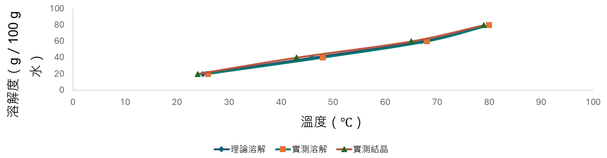
| 量測階段 | 觀察與讀值 | 記錄用途 |
|---|---|---|
| 加熱 | 最後一批晶體剛完全溶解 | 記錄溶解溫度 |
| 冷卻 | 第一批晶體剛出現 | 記錄結晶溫度 |
| 作圖 | 橫軸溫度，縱軸每 100 g 水的溶質克數 | 比較兩組曲線 |
若每支試管用 5 g 水，硝酸鉀用量需乘以 20 才能換算成溶解度。
討論 1 為何不可用溫度計攪拌溶液？
討論 2 溶解時與結晶時測得的溫度是否一定相同？原因為何？
討論 3 根據量測結果，硝酸鉀的溶解度隨溫度如何改變？
講義第 175 頁
附圖是硝酸鉀在水中的溶解度曲線。在 26 ℃，將 30 g 硝酸鉀加入 50 g 水並攪拌至平衡。哪些敘述正確？
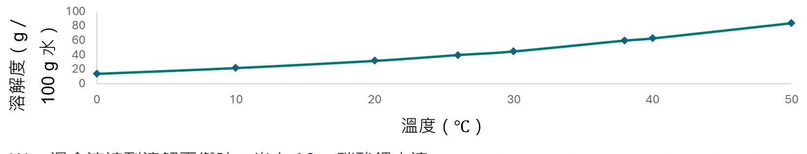
講義第 175 頁
在白色點滴表格中比較甲基橙、石蕊和酚酞在一系列已知 pH 下的顏色。
每種樣品各佔獨立格子。用不同滴管可減少交叉污染。
觀察未知樣品後，將各種指示劑提供的 pH 範圍取交集。
| 指示劑／pH | 1 | 3 | 5 | 7 | 9 | 11 | 13 | 食醋 | 小蘇打 |
|---|---|---|---|---|---|---|---|---|---|
| 甲基橙 | 紅 | 紅 | 黃 | 黃 | 黃 | 黃 | 黃 | 紅 | 黃 |
| 石蕊 | 紅 | 紅 | 紫 | 紫 | 藍 | 藍 | 藍 | 紅 | 藍 |
| 酚酞 | 無色 | 無色 | 無色 | 無色 | 粉紅 | 紅 | 紅 | 無色 | 紅 |
| 示例觀察 | 依變色範圍推估的 pH |
|---|---|
| 甲基橙呈黃色 | 約大於 4.4 |
| 酚酞呈無色 | 約低於 8.3 |
| 兩個範圍的交集 | 約在 4.4 到 8.3 之間 |
變色邊界附近可與已知 pH 的標準溶液並列比色。
1 甲基橙、酚酞、石蕊各在哪個 pH 範圍內變色？
2 為何選用白色 A5 護貝紙？
3 三種指示劑中，哪一種能較精細地判定 pH？需要考慮什麼條件？
4 若變色不易判讀，可如何改進？
氫氧化鈉和鹽酸皆為 3 M，每滴 0.1 mL。各杯盛放的溶液如下。
| 杯號 | 1 | 2 | 3 | 4 | 5 |
|---|---|---|---|---|---|
| 杯內溶液 | 氫氧化鈉 | 鹽酸 | 氫氧化鈉 | 石蕊 | 酚酞 |
| 滴數 | 1 | 2 | 3 | 4 | 5 |
1 在 5 號杯加入 10 mL 自來水後倒入 1 號杯，溶液變紅。再把 1 號杯全部倒入 2 號杯，顏色如何改變？
2 接續將 2 號杯混合液全部倒入 3 號杯，再倒入 4 號杯，最後呈什麼顏色？
1 下列反應所得溶液，何者可使藍色石蕊試紙變紅？
2 比較甲、乙、丙、丁、戊五種溶液的氫離子濃度。下表列出題目提供的指示劑資料。
| 指示劑 | 甲基橙 | 甲基紅 | 溴瑞香草酚藍 | 酚紅 | 酚酞 |
|---|---|---|---|---|---|
| 顏色變化 | 紅 → 黃 | 紅 → 黃 | 黃 → 藍 | 黃 → 紅 | 無色 → 紅 |
| 變色範圍（pH） | 3.2–4.4 | 4.2–6.3 | 6.0–7.6 | 6.8–8.4 | 8.2–10.0 |
| 溶液 | 甲基橙 | 甲基紅 | 溴瑞香草酚藍 | 酚紅 | 酚酞 |
|---|---|---|---|---|---|
| 甲 | — | 紅色 | — | — | — |
| 乙 | — | — | 綠色 | — | — |
| 丙 | 橙色 | — | — | — | — |
| 丁 | — | — | — | 紅色 | — |
| 戊 | — | — | — | — | 無色 |
氫離子濃度大小關係何者正確？
例題 1 B、E
練習 1 B、D
例題 2 B、D、E
練習 2 B
單選 1 A
單選 2 A
多選 1 A、D
多選 2 B、C、E
多選 3 A、D、E
多選 4 A、B、C、E
例題 1 37.5%、4.12 M
練習 1 13.8%、1.00 M
例題 2 A
練習 2 B
例題 3 E
例題 4 B
練習 4 6.16 M
例題 5 6.20 M
練習 5 A
單選 1 D
單選 2 B
單選 3 B
單選 4 D
單選 5 C
單選 6 E
單選 7 C
單選 8 B
單選 9 D
單選 10 C
單選 11 E
單選 12 D
單選 13 B
單選 14 A
多選 1 B、D、E
非選 2 1.00 mol、6.67 M
例題 1 B、C、E
練習 1 B、E
例題 2 C、約 52.4%、約 150 g、未飽和、約 20 ℃／40 g／50 g
練習 2 22.2 g、28.6 g
單選 1 B
單選 2 D
單選 3 B
單選 4 C
單選 5 C
單選 6 C
單選 7 A
單選 8 D
單選 9 B
單選 10 B
單選 11 D
單選 12 B
單選 13 C
多選 1 A、B
多選 2 A、C
非選 1 41.2 g／100 g 水
例題 1 D
練習 1 C
練習 2 C
例題 3 E
練習 3 B
例題 4（1） A
例題 4（2） E
例題 5 B
例題 6 約 2.9 g
練習 6 C
單選 1 B
單選 2 D
單選 3 D
單選 4 D
單選 5 C
單選 6 B
單選 7 D
單選 8 B
單選 9 C
單選 10 D
單選 11 A
單選 12 B
單選 13 B
單選 14 C
單選 15 A
單選 16 B
單選 17 A
多選 1 A、H
多選 2 A、C、E
多選 3 B、E
非選 1 約 5.70
非選 2 1.85 g、250 mL、500 mL
單選 1 B
單選 2 D
單選 3 A
單選 4 B
單選 5 C
單選 6 A
單選 7 B
單選 8 D
單選 9 F
單選 10 E
多選 1 A、D、E
多選 2 A、B、E
多選 3 A、B、C、E
多選 4 A、B
立即練習 1 B
立即練習 2 A、B、D
實驗 4 討論 1 避免溫度計碰撞破裂。
實驗 4 討論 2 兩者不一定相同。可能受過飽和、熱傳及讀值時機影響。
實驗 4 討論 3 硝酸鉀的溶解度隨溫度升高而增加。
實驗 5 討論 1 甲基橙約 3.1–4.4、酚酞約 8.3–9.6、石蕊約 4.5–8.3。
實驗 5 討論 2 白底便於辨色。
實驗 5 討論 3 待測值落於變色區間時，變色範圍較窄者可提供較細的判別。
實驗 5 討論 4 改善照明並與標準色對照。
實驗 5 立即練習 1 無色。2 酚酞呈紅色，石蕊呈藍色，混合後可呈紫色。
1 D
2 E